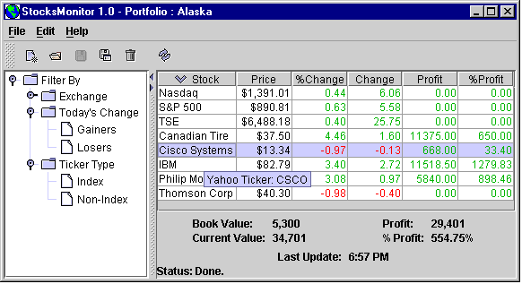

WEB4J, Un Marco de trabajo de Aplicaciones WEB
StocksMonitor is an example Swing application built with JDK 1.7. It has 65 classes, and its source code is used by
this site to illustrate many points related to Swing. Code examples taken from StocksMonitor are presented in their
entirety, without editing in any way, in order to provide realistic examples. (See
web4j for an example web application.)
StocksMonitor periodically retrieves current stock prices from the web.
The following are provided for StocksMonitor:
Movies is also available.
It's more appropriate for beginners.)
Screen shot of the StocksMonitor app:
